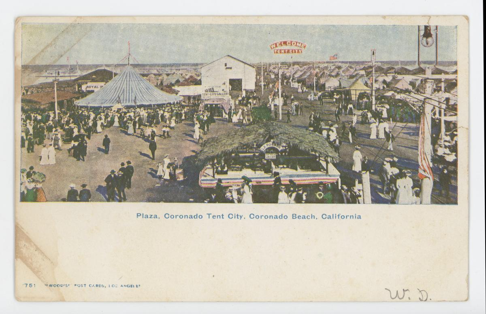
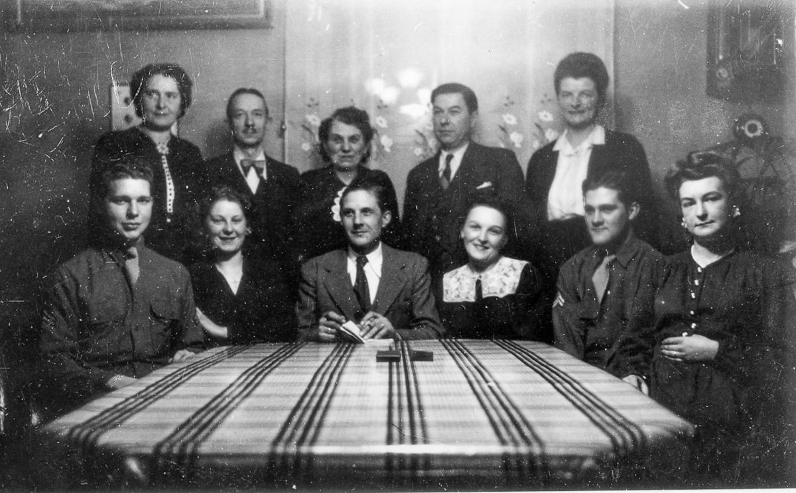

The Hartley Family Archive
The Hartley Family
A record of the Hartley family and the lines that married into it — Bradford, Cole, Reed, Frost, and Webb — drawn from census and vital records, newspapers, and the family's own papers and photographs.

Start with the family tree below, browse the people by surname, or read through the sources the record is built on — every fact on a person's page links back to the source that supports it.
Family tree
Descendants of Caleb Comstock Hartley - click a name to open that person; use −/+ to collapse or expand.